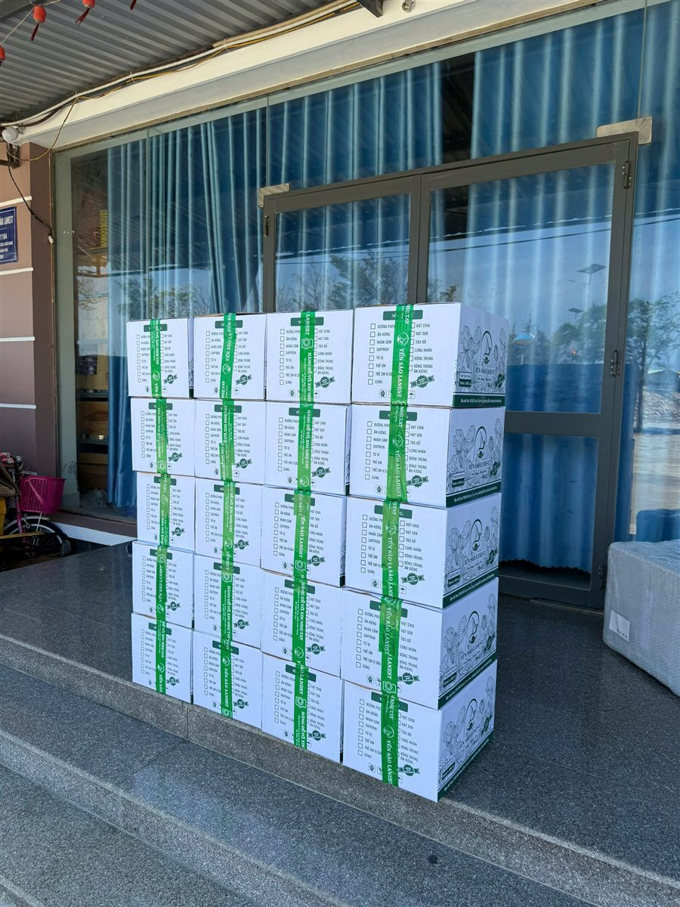
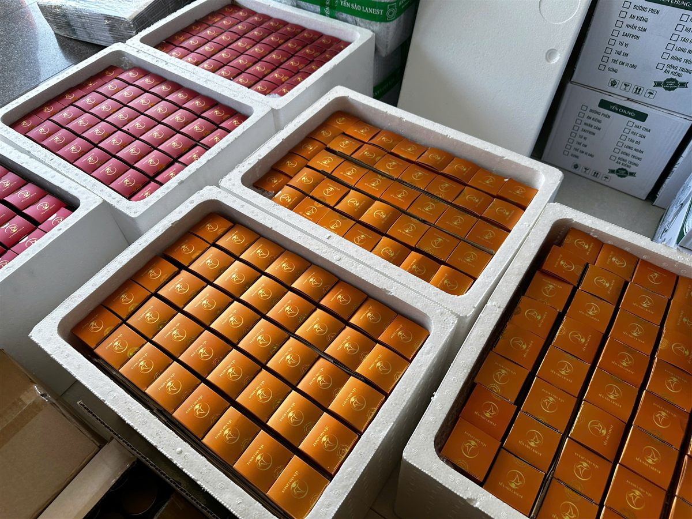

Mua Yến Tại Lanest: Đặt Hàng, Giao Hàng, Đổi Trả Thế Nào
Yến Sào Lanest · Đăng ngày 23/10/2026

Lần đầu mua yến online, ai cũng có vài băn khoăn: đặt ở đâu, bao lâu thì tới, hàng lỗi thì sao. Bài này nói rõ từng bước khi mua yến sào Lanest, từ lúc đặt đơn đến lúc mở hộp, đúng theo chính sách Lanest đang áp dụng. Đọc xong, anh chị biết mình cần chuẩn bị gì và được bảo vệ những gì.
Thùng hàng đã đóng, dán băng keo, xếp chờ đơn vị vận chuyển tới lấy
1. Đặt hàng qua kênh nào?
Anh chị có thể đặt yến Lanest qua bốn kênh:
- Website lanest.com.vn: chọn sản phẩm vào giỏ, gửi đơn hoặc bấm gọi đặt hàng.
- Hotline 0258 6278 627: gọi trong giờ hành chính.
- Fanpage Yến Sào Lanest: nhắn tin trực tiếp.
- Đại lý phân phối của Lanest trên toàn quốc.
Khi đặt, anh chị chuẩn bị sẵn: tên sản phẩm và số lượng, họ tên người nhận, số điện thoại, địa chỉ giao hàng, và ghi chú nếu có (ví dụ muốn phối vị, cần giao giờ nào). Đơn mua làm quà có thể chọn thêm hộp, túi và thiệp, xem bài quà biếu sức khỏe yến sào.
2. Xác nhận đơn và thanh toán
Sau khi nhận đơn, nhân viên chăm sóc khách hàng sẽ liên hệ xác nhận trong vòng 12 giờ làm việc. Giờ làm việc là 08:00–17:30, từ Thứ 2 đến Thứ 7. Đơn chỉ được xử lý sau khi xác nhận thành công và hoàn tất thanh toán hoặc đặt cọc.
| Hình thức | Cách làm |
| Chuyển khoản trước (khuyến khích) | Chuyển vào tài khoản đứng tên Công ty TNHH Yến Sào Lanest; nhân viên gửi thông tin khi xác nhận đơn |
| Thanh toán khi nhận hàng (COD) | Đặt cọc trước một phần theo giá trị đơn, phần còn lại trả tiền mặt cho người giao hàng |
| Đơn đặc biệt, làm theo yêu cầu, số lượng lớn | Đặt cọc theo tỷ lệ phần trăm giá trị đơn, nhân viên báo cụ thể |
Khi đặt trực tiếp với Lanest, tài khoản nhận chuyển khoản là tài khoản đứng tên Công ty TNHH Yến Sào Lanest. Có gì chưa rõ, anh chị gọi hotline để kiểm tra trước khi chuyển.
3. Giao hàng mất bao lâu, phí thế nào?
- Giao trong ngày tại Cam Ranh, Nha Trang và một số tỉnh có đại lý, tùy thời điểm đặt.
- Tỉnh khác, ngoại thành: 2–5 ngày làm việc. Nhìn chung 1–5 ngày tùy khu vực, qua Giao Hàng Nhanh, Viettel Post, hoặc gửi chành xe với tuyến có chành.
- Miễn phí giao hàng cho yến tinh chế từ 200g, hoặc yến hũ từ 3 thùng.
- Đơn khác tính phí theo kích thước, trọng lượng; nhân viên báo chính xác khi xác nhận đơn.
Mùa lễ, Tết đơn dồn nhiều, anh chị cần quà cho ngày cụ thể thì nên đặt sớm vài ngày.
4. Nhận hàng: kiểm tra những gì?
Với đơn COD, anh chị được kiểm tra hàng trước khi thanh toán. Nên xem bốn thứ:
- Hộp, hũ còn nguyên, tem niêm phong còn nguyên.
- Số lượng đúng với đơn.
- Đúng loại sản phẩm, đúng vị đã đặt.
- Hạn sử dụng in trên bao bì, bao bì không móp méo.
Nếu hàng móp, vỡ, thiếu, sai loại, anh chị có quyền từ chối nhận và báo ngay hotline 0258 6278 627. Một thói quen nhỏ rất nên làm: quay video lúc mở hộp, vì đây là bằng chứng cần cho bước đổi trả bên dưới.

Hộp yến xếp kín trong thùng xốp để hạn chế va đập trên đường giao
5. Đổi trả, bảo hành trong 15 ngày
Chính sách áp dụng cho yến hũ chưng sẵn và yến tinh chế mua tại website, cửa hàng của công ty và đại lý ủy quyền. Thời hạn là 15 ngày kể từ ngày nhận hàng và không quá hạn sử dụng.
Được đổi, trả hoặc hoàn tiền khi:
- Sản phẩm vỡ, hư hỏng, biến chất do vận chuyển hoặc do nhà sản xuất.
- Giao sai sản phẩm, sai loại, sai khối lượng.
- Yến hũ bị rò rỉ, nắp không kín; yến tinh chế bị ẩm, mốc, có dị vật.
Kèm theo đó, anh chị cần có hóa đơn mua hàng và video hoặc hình ảnh quay lại lúc mở hộp.
Không áp dụng khi: sản phẩm đã dùng hoặc hết hạn; mất bao bì, tem niêm phong, hóa đơn; bảo quản sai cách (ẩm, nóng, nắng trực tiếp); hư do làm rơi, đổ, hở nắp; không có hình ảnh chứng minh lỗi từ lúc mở hàng.
Các bước: gọi hotline hoặc nhắn qua website, gửi hình ảnh, video sản phẩm lỗi và thông tin đơn; Lanest phản hồi trong 1–2 ngày làm việc; đổi sản phẩm tương đương hoặc hoàn tiền theo thỏa thuận. Phí vận chuyển phát sinh do lỗi từ phía công ty được miễn 100%.
Để hàng không hỏng vì cất sai, anh chị xem bài cách bảo quản tổ yến và yến chưng.
6. Hóa đơn và mua số lượng lớn
Mỗi đơn đều có hóa đơn bán lẻ; giá bán lẻ đã gồm VAT 8%. Doanh nghiệp cần hóa đơn VAT thì gửi thông tin công ty ngay khi đặt hàng, nếu không hóa đơn sẽ xuất theo khách lẻ.
Anh chị muốn nhập hàng để bán lại, vui lòng liên hệ hotline để được tư vấn chính sách đại lý; thông tin chung có ở bài làm đại lý yến sào Lanest.
Câu hỏi thường gặp
Đặt hàng buổi tối thì khi nào được xác nhận?
Đơn được xác nhận trong vòng 12 giờ làm việc, tức trong khung 08:00–17:30 từ Thứ 2 đến Thứ 7. Đơn đặt ngoài giờ sẽ được gọi lại vào giờ làm việc kế tiếp.
Mở hộp ra mới thấy hũ rò rỉ thì làm sao?
Anh chị chụp ảnh, quay video sản phẩm, gọi 0258 6278 627 trong vòng 15 ngày kể từ khi nhận hàng. Lanest phản hồi trong 1–2 ngày làm việc và đổi sản phẩm tương đương hoặc hoàn tiền.
Có được xem hàng trước khi trả tiền không?
Có, với đơn thanh toán khi nhận hàng (COD). Anh chị kiểm tra tình trạng hộp, hũ, tem, số lượng và hạn dùng rồi mới thanh toán.